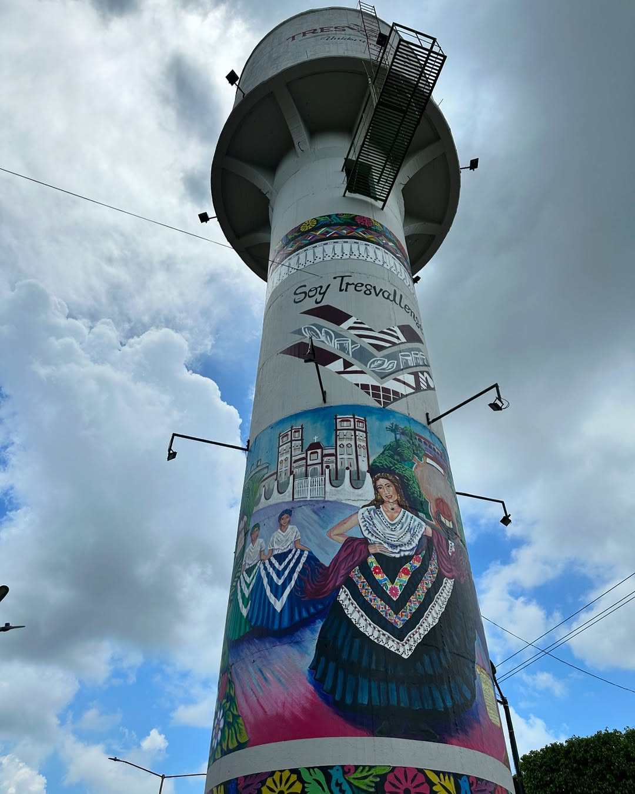

LUGARES DE INTERÉS DE TRES VALLES
Unos de los lugares de interes es el parque.
PARQUE
El parque miguel hidalgo no solo sirve como un espacio verde en la comunidad, sino también
Desempeña un papel crucial en la vida cultura de tres valles. A menudo hacen actividades
Comunitaria,
festivales y eventos convirtiéndose en un punto de encuentro importante para todos los habitantes.

otro punto de interes es el tanque de agua
construido en el 1957 Por la extinta comisión del Papaloapan, el tanque de almacenamiento de agua situado en el bulevar Álvaro obregón, abastecía con 100 metros cubico de agua los habitantes de la
cabecera municipal.
El tanque de agua hoy en dia es un símbolo característico de tres valles, con un significado metafórico y controversial.

otro lugar de interés de tres es la Capilla del Parque
La capilla del parque
Fecha de construcion de la capilla se construyó el 5 de diciembre de 1976 esta ubicado frente al parque municipal de tres valles la capilla representa un hito en la historia de tres valles es un lugar donde los habitantes de tres valles su catolisismo donde hace culto bautizo etc